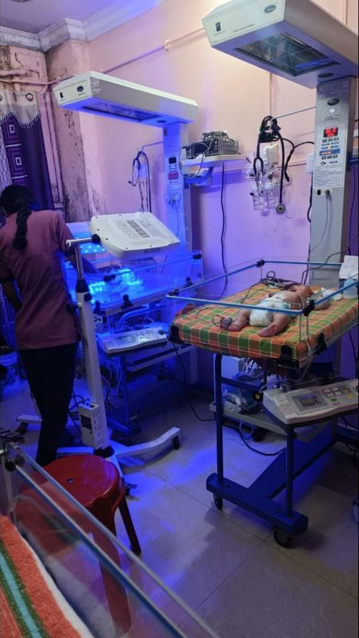
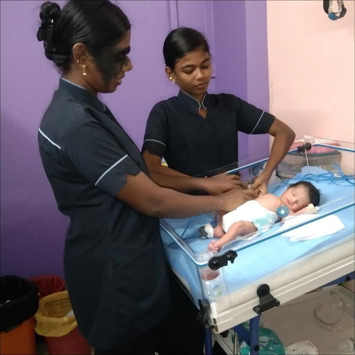
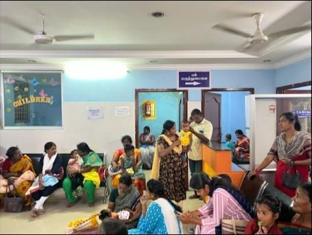
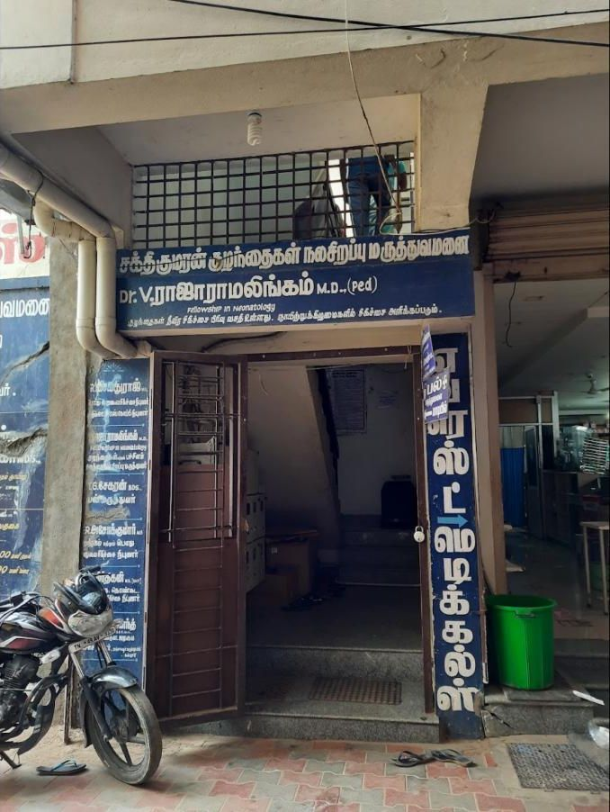
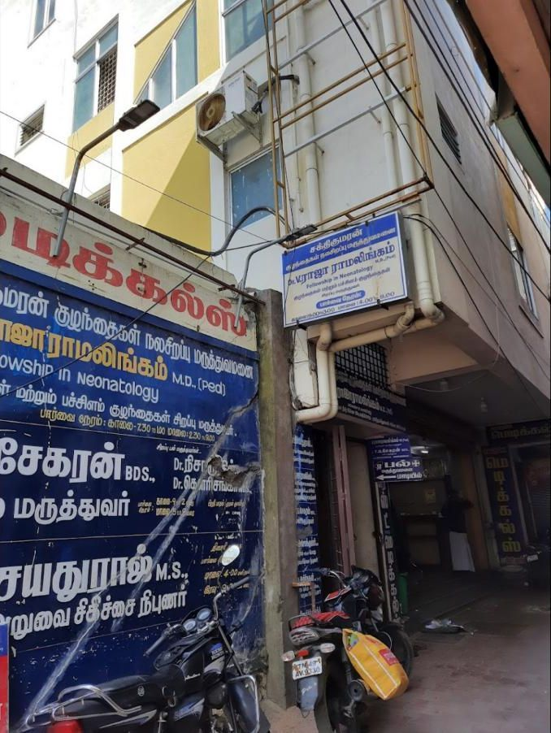

Neonatal intensive care
Radiant warmers, oxygen support and continuous monitoring with round-the-clock nursing for premature and unwell newborns, under a neonatology-trained pediatrician.
For newborns, first 28 daysLed by Dr. Raja Ramalingam V, MD (Paed), with a Fellowship in Neonatology. Newborn intensive care, vaccinations, check-ups and same-day sick visits, open every day of the week.
One specialist team for newborn emergencies, routine care and everything in between.

Radiant warmers, oxygen support and continuous monitoring with round-the-clock nursing for premature and unwell newborns, under a neonatology-trained pediatrician.
For newborns, first 28 daysOn-site blue-light treatment for newborn jaundice with regular bilirubin monitoring.
For newbornsThe full childhood immunisation schedule. See what is due next in the vaccine planner.
Birth to 12 yearsHeight, weight and milestone assessment, with feeding and nutrition guidance.
All agesSame-day assessment of fevers, coughs, stomach upsets and rashes.
All agesAdmission and observation for children who need IV fluids or closer monitoring.
All agesConsultant Pediatrician & Neonatologist
டாக்டர் வி. ராஜாராமலிங்கம்
Dr. Raja Ramalingam V founded the hospital in 2015 so that families in and around Pattukkottai could reach a pediatric specialist without travelling to a city. His training in neonatology means premature and critically unwell newborns are cared for here, close to home.
MBBS, JJM Medical College
Post-graduate degree in Pediatrics
Neonatology: newborn and premature-baby intensive care
Founded Sakthi Kumaran Pediatrics & Neonatal Care Hospital
“He treats every kid more than a patient, like a family.”
A parent, Google review




Quick references for the questions parents ask most. They don’t replace a consultation. If you are unsure, call the clinic.
Based on the Indian Academy of Pediatrics schedule. The doctor will confirm the exact vaccines for your child.
Every child develops at their own pace. If your child loses a skill they once had, mention it at your next visit.
Checking hours
Every day · 6:00 am – 3:30 pm and 4:30 pm – 10:00 pm
Manickam Colony, Pattukkottai,
Tamil Nadu 614601
+91 87544 42145